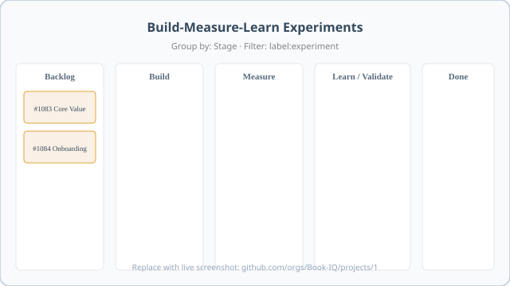

Build-Measure-Learn Onboarding
Full course — ~2.5–3 hours. Use browser Print → Save as PDF.
Introduction — why Build-Measure-Learn
~20 min
Hard truth
Most teams say they do Build-Measure-Learn but never kill anything. If Learn does not regularly produce kill, pivot, or persevere decisions from real data, you are doing theater — not learning.
What you are learning
BookIQ is onboarding first customers. The goal is not to ship features faster — it is to test risky assumptions about whether customers get real value from OMI insights, human oversight, forecasts, and pricing.
Validated learning is progress: evidence from real customers that updates your beliefs. Shipping without measuring, or measuring without deciding, is not progress.
The loop: Build the smallest test → Measure with pre-defined metrics → Learn (Persevere / Pivot / Kill). Optimize cycle time from hypothesis to decision.
BookIQ — four risky assumptions
These drive our first experiments (handoff §2):
- Customers act on OMI insights — not just glance at the dashboard.
- Human-reviewed insights add trust vs pure AI.
- Customers keep paying after novelty wears off (30–60 days).
- Forecast & Runway (and similar) are actually used and valued.
Every experiment ticket names one of these (or a sharper slice) as the hypothesis.
Do this now
Write one sentence: “The riskiest assumption for BookIQ right now is ___ because if it’s wrong, ___.” You will reuse this in Module 7.
Failure modes
- Feature factory: velocity celebrated; Learn column empty.
- Vague hypotheses: “Improve onboarding” is not testable.
- Vanity metrics: logins and page views that cannot fail the bet.
Checklist
Self-check
What is the difference between shipping and validated learning?
Why must Learn produce kill/pivot/persevere decisions?
The Build-Measure-Learn loop & board
~20 min
Hard truth
Learn / Validate is the most important column. If you are not making real decisions there, the whole system is broken.
Five columns (Stage field)

One GitHub issue = one experiment. Project board is visual only; the issue body is source of truth.
- Backlog — assumption queued; hypothesis + kill criteria before leaving.
- Build — smallest test shipping; Cursor skill chain applies.
- Measure — clock running; no new scope; weekly numbers on the issue.
- Learn / Validate — Persevere, Pivot, or Kill with evidence.
- Done — decision recorded; next action filed.
Labels (all seven)
experiment · hypothesis · measure · learn · kill-candidate · persevere · pivot
Columns own phase. Phase labels are optional filters. Decision labels apply at Learn only.
BookIQ — five initial experiments
Do this now
Pick one of the five tickets. State its kill criteria in one line without opening the doc.
Failure modes
- Cards skip Measure — “we’ll know when we ship.”
- Learn holds vague retrospectives — no
persevere/pivot/kill-candidate. - Five half-baked experiments instead of one good loop.
Checklist
Self-check
What must happen before a card leaves Backlog?
GitHub setup
~15 min
Hard truth
Vanity metrics (logins, raw clicks) are not enough. We care whether customers make better financial decisions because of BookIQ.
What you need
- GitHub Issues — one issue per experiment (source of truth).
- GitHub Project — Kanban view grouped by Stage.
- Live board: Book-IQ/projects/1

Replace placeholder with a live screenshot after setup. Group by → Stage · Filter → label:experiment
Create labels (~2 min)
gh label create experiment --description "BML experiment ticket" --color 0E8A16
gh label create hypothesis --description "Optional filter" --color C5DEF5
gh label create measure --description "Optional filter" --color FEF2C0
gh label create learn --description "Optional filter" --color D4C5F9
gh label create persevere --description "Learn — keep going" --color 0E8A16
gh label create pivot --description "Learn — change approach" --color FBCA04
gh label create kill-candidate --description "Learn — kill" --color D93F0BFull setup: Build_Loop_Kanban_Setup.md
Create an experiment (<2 min)
gh issue create --title "BML: …" --label experiment --body-file path/to/body.md
gh project item-add <PROJECT_NUMBER> --owner Book-IQ --url <ISSUE_URL>Or: New issue → Build-Measure-Learn Experiment template → add to project → Backlog.
Do this now
Open the live board. Confirm Stage columns include Learn / Validate. Find issues #1083–#1085 in Backlog.
Failure modes
- Board grouped by Status instead of Stage — columns drift.
- Issues without
experimentlabel — filter breaks. - Skipping project link — invisible experiments.
Checklist
Ticket template & Build skills
~25 min
Hard truth
Do not jump straight to building on non-trivial work. Experiment quality depends on grilling and a clear spec before tickets. Do not substitute /to-issues + bare /tdd for the chain — /implement already owns TDD and review.
Exact ticket template (handoff)
## Hypothesis
What do we believe will happen?
## Build
What exactly are we building? What is the smallest version we can ship to test this?
## Measure
What specific metrics or data will we collect? How will we know if the hypothesis is validated or invalidated?
## Learn
What did we actually learn? What decision are we making? (Persevere / Pivot / Kill)
## Acceptance Criteria
- [ ] ...
## Technical Context / References
@relevant-files @folders (for /grill-with-docs)How to fill Measure: add a table with pass/kill thresholds, duration, and sample — see Ticket 1 example. Repo template: build-loop-experiment.md
Cursor skill chain (Build column)

/grill-with-docs— prime with issue + folders; sharpen assumptions/to-spec— publish spec from grilled conversation (no re-interview)/to-tickets— tracer-bullet vertical slices with blockers/implement— one ticket at a time; runs/tdd+/code-review; commits
Tiny builds: skip to /implement (optional light grill).
BookIQ example — Ticket 1 (Core Value)
Hypothesis: Customers actively read and act on OMI’s weekly insights.
Build: Confirm weekly delivery + omi.insight.* events — no new product scope.
Measure: ≥60% weekly open+click · kill <40% after 4 weeks.
Learn: Persevere / Pivot / Kill with evidence + kill-candidate if dead.
Full draft · Live #1083
Do this now
Copy the template. Paste into a scratch issue. Fill Hypothesis + Measure (with pass/kill) for Ticket 1 without looking at the draft.
Failure modes
- Template sections renamed — Cursor skills can’t find structure.
- Skipping grill on multi-PR builds — weak assumptions ship.
- Using
/prototypeor/wayfinderinstead of the Build chain.
Checklist
Running an experiment
~25 min
Hard truth
The Measure phase must be taken seriously. If you treat it as a waiting room while you build the next feature, you are not doing Build-Measure-Learn.
Column gates
| Leaving… | Requires |
|---|---|
| Backlog → Build | Hypothesis + numeric kill criteria on issue |
| Build → Measure | Smallest test shipped; instrumentation or manual log path exists |
| Measure → Learn / Validate | Duration elapsed or kill threshold hit; weekly numbers posted |
| Learn → Done | Decision + evidence; one of persevere pivot kill-candidate |
BookIQ walkthrough — Ticket 2 (Human Review)
Hypothesis: Customers trust insights more when they know a human reviewed them.
Build: A/B or cohort — same insight content, one arm shows “human-reviewed” indicator. Badge/copy only unless review workflow is required.
Measure (3 weeks): trust/usefulness ratings + omi.insight.acted by variant. Kill: no meaningful difference.
Learn: If kill — stop investing in human-review marketing; if persevere — expand review surfacing.
Full draft · Backlog until Core Value (#1083) has signal.
Build column — when code ships
Non-trivial: /grill-with-docs → /to-spec → /to-tickets → /implement.
Measure column: no code unless instrumentation is broken — update issue with weekly numbers.
Do this now
On paper, walk Ticket 1 (#1083) through all five columns. What artifact exists in each column?
Failure modes
- Measure without pre-registered pass/kill — any result “wins.”
- Building new features during Measure — scope creep.
- Learn without customer evidence — vibes-based persevere.
Checklist
Self-check
When can you write code during Measure?
Operating the board
~20 min
Hard truth
If you have not killed something in 60 days, you failed the system. One good experiment beats five half-baked features.
WIP limits
- Max 3 active in Build + Measure combined (team of 3).
- Clear Learn / Validate before pulling new Builds from Backlog.
- Week-1 live priority: Core Value, Onboarding, Feature Usage — not all five at once.
Weekly cadence (30 min max)
- Move overdue cards to Learn / Validate.
- For each Learn card: Decision + Evidence on issue; apply decision label; → Done.
- If Learn had zero decisions for 2+ weeks → fix Learn before shipping more.
BookIQ anti-patterns
- Stuck Learn: #1083 in Measure forever with no weekly
omi.insight.*tallies. - Vanity: celebrating dashboard logins while
omi.insight.actedis zero. - Zombie persevere: Forecast/Runway roadmap full steam while Ticket 3 shows low
feature.returned.
Metrics dictionary: Build_Loop_Metrics_Tracking.md
Do this now
Scan the live board. Count cards in Build + Measure. If >3, identify what moves to Learn or Backlog.
Failure modes
- Learn queue as parking lot — no decisions for weeks.
- Starting Pricing (#4) before day 45–60 cohort data exists.
- Human Review (#2) before Core Value (#1) shows engagement signal.
Checklist
Sandbox — your first ticket
~30 min
Hard truth
Reading this course does not certify you. A lead must review a real ticket you wrote — with kill criteria sharp enough to actually kill the bet.
Pick one of the five tickets
Your task
- Copy the exact template (or use Copy button there).
- Draft a new sandbox issue in
Practical-Office/bml-onboardingDiscussions or a scratch repo — not the live BookIQ board until certified. - Fill all six sections. Measure must include pass/kill numbers and duration.
- Submit link to your lead for certification.
Alternative: improve one section on an existing draft (e.g. sharpen Ticket 4 pricing kill criteria) and explain what changed.
Do this now
Create the sandbox issue. Paste the URL in your certification checklist.
Failure modes
- Sandbox issue filed on live board without lead approval.
- Measure section without numeric kill threshold.
- Technical Context empty — grill-with-docs has nothing to prime.
Checklist
Build-Measure-Learn quick reference
printable one-pager
Columns (Stage)
Backlog → Build → Measure → Learn / Validate → Done
Labels
experiment hypothesis measure learn persevere pivot kill-candidate
Columns own phase. Decision labels at Learn only.
WIP & cadence
- Max 3 active in Build + Measure
- Weekly 30 min: overdue → Learn; decide; label; Done
- 2+ weeks with zero Learn decisions = theater — fix before new Builds
Column gates
- Backlog → Build: hypothesis + kill criteria
- Build → Measure: smallest test shipped + measure path
- Measure → Learn: duration done or kill hit; numbers posted
- Learn → Done: decision + evidence + label
Ticket template
## Hypothesis
## Build
## Measure
## Learn
## Acceptance Criteria
## Technical Context / ReferencesFill Measure with pass/kill table + duration. Prime grill: @folders in Technical Context.
Build skills (required order)
/grill-with-docs → /to-spec → /to-tickets → /implement (/tdd + /code-review inside)
Tiny build: /implement only. No /to-issues substitute.
Hard truths
- Most teams never kill anything — we will.
- Learn / Validate is the most important column.
- Vanity metrics ≠ validated learning.
- 60 days without a kill = you failed the system.
BookIQ — five tickets
- OMI insights engagement (#1083)
- Human review A/B (backlog)
- Forecast / Runway usage (#1085)
- Pricing $399+ (backlog, day 45–60)
- Onboarding completion (#1084)
Certification
lead-reviewed
Certification means you can create strong experiment tickets and operate the board without theater. Your lead signs off after reviewing your sandbox work.
Checklist
First week on the live board
After certification
- Join Book-IQ/projects/1 — confirm Stage grouping.
- Pick up one live ticket (#1083, #1084, or #1085) — do not exceed WIP 3.
- Run weekly Learn review — decisions before new Builds.
- Keep quick reference bookmarked.
Skills deep-dives
Required chain: grill-with-docs · to-spec · to-tickets · implement
Optional: tdd · code-review · grilling